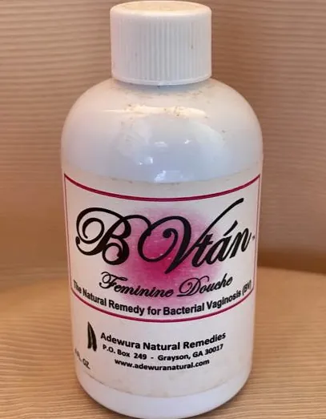
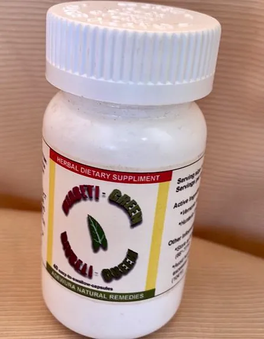

Restoria™
Nighttime formula · 30 capsules
A plant-based formula with hibiscus and peperomia pellucida, made to help a busy mind unwind and move into natural rest. Melatonin-free. $29.99.
Read about RestoriaRemedies made from tropical plants rich in vitamins and minerals such as potassium, magnesium and zinc, which every living cell needs. The plants come from work with local farmers, which also creates jobs.
Nighttime formula · 30 capsules
A plant-based formula with hibiscus and peperomia pellucida, made to help a busy mind unwind and move into natural rest. Melatonin-free. $29.99.
Read about RestoriaHerbal blend for intimacy
An herbal blend of African botanicals, made to support intimacy, desire and pleasure for both men and women, without disrupting your daily routine.
Natural ingredients · Scientifically approved · Easy results · 1090+ happy customers
Get your ALΣ now: limited to just 19 individuals. Order today before 11:59 pm to get 50% off. This offer is only available for a limited time.

Herbal supplement
Made from tropical plants rich in potassium, which every living cell needs, to help restore potassium levels for normal body function.
On the current site this description is the same as an older ALΣ listing. To be confirmed with the client.

Feminine douche and wash
Made for the discharge, itching and odor of bacterial vaginosis (BV), and to help restore the natural pH balance. It is made from four ingredients: Kalanchoe crenata, Peperomia pellucida, Vernonia amygdalina and a potassium base.
The formula is rich in vitamin E and free of perfumes and harsh chemicals that could irritate delicate tissue, and the wash is made for everyday use. It comes with a 60-day money-back guarantee.
According to the Centers for Disease Control and Prevention (CDC), bacterial vaginosis is not considered to be a sexually transmitted infection. Any woman can get BV; however, it occurs more commonly in women who are sexually active.
A healthy vagina normally contains many “good” bacteria and fewer “harmful” bacteria. BV is a condition in which this normal balance is disrupted and replaced by an overgrowth of harmful bacteria, which are very diverse but include Gardnerella vaginalis, Mobiluncus, Bacteroides and Mycoplasma. Left untreated, it can lead to serious complications like pelvic inflammatory disease, recurrent infections and even infertility.
BV is often confused with a yeast infection (candidiasis) or with trichomoniasis, which are not caused by bacteria. The cause of BV is still unknown, but some activities and behaviors put women at increased risk, like changing sex partners or having multiple partners. Most women with BV report no symptoms at all. Others may have a thin white or grayish discharge with an unpleasant fish-like odor, especially after intercourse, and burning during urination or itching around the outside of the vagina, or both.
Sarah is a young woman just like you who was struggling with bacterial vaginosis for years. She tried everything from herbal remedies to over-the-counter medications, but nothing seemed to work. She felt frustrated, hopeless and constantly uncomfortable. That was until she discovered B Vtán.
Here are just a few of the benefits Sarah experienced after using B Vtán:
Don't be jealous of Sarah's newfound confidence and health. You too can experience the same benefits with B Vtán, made to help women like you solve their bacterial vaginosis problems once and for all. Join the thousands of satisfied women who have said goodbye to their bacterial vaginosis problems.
This offer is only available for a limited time. So act fast and secure a bottle of B Vtán today.
We know you've seen a lot of “pie in the sky” BV schemes, but this is real. You may have tried similar products in the past and been disappointed, but B Vtán is different. Our formula is backed by science and has been tested and proven to be effective.

Herbal supplement
Formulated for people with sickle cell conditions and forms of anemia, to support red blood cell production. Its ingredients have antioxidant, antimicrobial and anti-inflammatory properties.

Water-based mixture
A blend of Sorghum bicolor, Alupayida (Uraria picta) and Akoogun (Aristolochia ringens). Described for sickle cell support, as an antioxidant, cleanser and tonic, for the heart’s potassium pump and for stomach problems.
Safety note. Akoogun is Aristolochia ringens. Plants in the Aristolochia family contain aristolochic acid. In 2001 the US Food and Drug Administration warned consumers to stop using botanical products that contain aristolochic acid, which has been linked to serious kidney damage, including kidney failure, and to cancer of the urinary tract.
This listing is under review with Adewura Natural.
Herbal blend
A blend of Sorghum bicolor, Alupayida (Uraria picta) and Akoogun (Aristolochia ringens). Described for sickle cell, heart health and stomach problems. True to its name, it is made to replenish blood nutrients and ease stress and fatigue.
Safety note. Akoogun is Aristolochia ringens. Plants in the Aristolochia family contain aristolochic acid. In 2001 the US Food and Drug Administration warned consumers to stop using botanical products that contain aristolochic acid, which has been linked to serious kidney damage, including kidney failure, and to cancer of the urinary tract.
This listing is under review with Adewura Natural.

Herbal supplement
Made with Bridelia ferruginea, Hunteria umbellata and Portulaca oleracea. Anti-inflammatory and antioxidant, made to support digestion, diabetes management, weight management and the immune system.

Capsules
Made with Vernonia amygdalina and Hunteria umbellata for people with type 2 diabetes, to support insulin regulation and the kidneys’ control of fluid balance.
To order any product, or to ask whether a remedy is right for you, email us or book a call.
These statements have not been evaluated by the Food and Drug Administration. These products are not intended to diagnose, treat, cure, or prevent any disease.